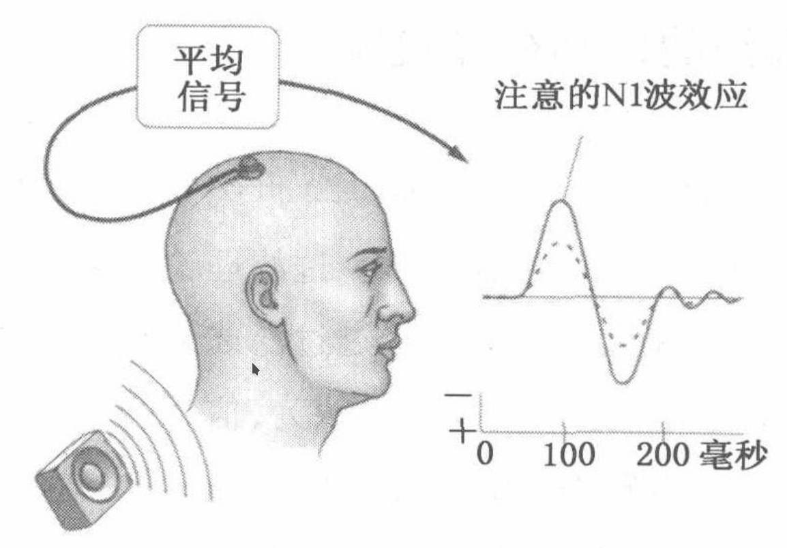
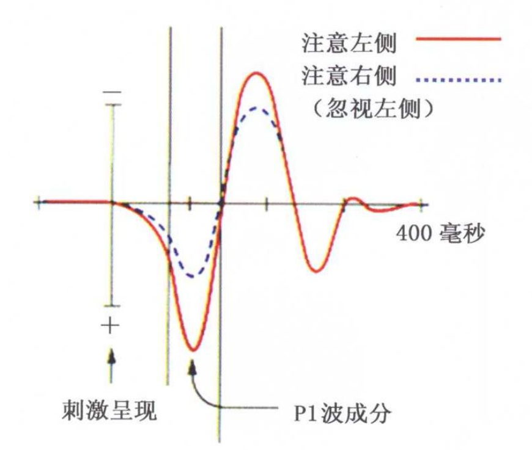

事件相关电位¶
引言¶
ERPs可以通过脑电图(EEG)可靠地测量,脑电图是一种通过放置在头皮上的电极来测量随时间变化的大脑电活动的方法.脑电图反映了数千个同时进行的大脑过程.这意味着大脑对单一刺激或感兴趣的事件的反应通常在单个试验的脑电图记录中不可见.为了观察大脑对刺激的反应,实验者必须进行多次试验并将结果平均,使随机的大脑活动平均,相关的波形保持不变,这就是所谓的ERP.
用一句话来讲:事件相关电位是与特定的物理事件或心理事件在时间上相关的电压波动.
来自维基百科的定义
An event-related potential (ERP) is the measured brain response that is the direct result of a specific sensory, cognitive, or motor event. More formally, it is any stereotyped electrophysiological response to a stimulus.
大脑产生的与事件相关的电压波动意味着什么?¶
ERP是神经信息处理的毫秒级记录,反应了大脑的感觉编码,抑制反应和更新工作记忆等特定的操作的神经活动.下面是笔者整理的几个例子,或许能够帮助读者理解事件相关电位的意义.
听觉注意¶
1973年,希利亚德设计了一个巧妙的实验,在一定程度上解释了听觉的注意机制.他们通过耳机在被试的两耳同时呈现不同音高的声音刺激流,在一种条件下要求被试注意呈现在左耳的刺激而忽略右耳,在另一种条件下则注意右耳的刺激而忽略左耳.这样,研究者就可以在被试只注意一侧耳刺激的条件下记录两个声音诱发的事件相关电位反应.结果发现,刺激注意与刺激忽略条件相比,听觉事件相关电位的振幅明显放大了.由于这个波是在刺激呈现后事件相关电位的第一个显著负波(N1波),而N1波成分是一种由感觉刺激诱发的脑波.所以,实验结果可能是感觉加工早期选择的证据.
视觉注意¶
采用事件相关电位技术,也可以直接测量脑内负责加工视觉刺激神经元的电活动,揭示选择注意是如何影响脑对视觉刺激加工的.心理学家伊森等人在1969年做了一个实验:要求被试有意将注意力暗中指向左侧(或者右侧)的某个位置,可以使事件相关电位在刺激出现后70-80毫秒的正波明显增高,这一成分称为P1波.
空间位置注意的P1波效应仅仅在空间注意时出现.在注意选择其它视觉特征,如颜色,空间频率,方向或这些特征的结合时都不会出现.进一步的研究显示,视觉空间选择性注意是通过调节视觉皮层的加工实现的.这些效应最初发生在纹外皮层,也可能包含纹状皮层.证据来自如下几方面:1,P1波效应在头皮上方的分布类似网膜图,在对侧枕区最大,这与视觉通路对侧投射是一致的;2,选择注意引起的事件相关电位潜伏期(70毫秒)和纹外皮层神经元放电的潜伏期一致;3,功能成像研究也表明,注意力对感觉加工调节发生在纹外皮层.
事件相关电位如何提取和分析?¶
由于其它噪声的干扰,事件相关电位很难直接从原始数据中观察到.为了提取到事件相关电位,需要做一些基本的假设:
在每次实验中,事件发生后段时间内,感兴趣的信号延迟和形状都不会变.
根据中心极限定理,在实验的次数足够多时,过程中的干扰的均值服从均值为0,方差为\(\sigma ^2\)的正态分布
中心极限定理
简单地讲,这个定理说明了足够多的独立随机变量的均值近似正态分布.
具体的处理过程见下面的动画演示
动画¶
数学定义¶
计算事件相关电位具体的数学过程如下.
设在第\(k\)次实验中,\(t\)时刻在电极上采集到的通道平均信号\(x(t,k)\)由原信号\(s(t)\)和噪声\(n(t,k)\)组成:
总共做了\(N\)次实验,\(N\)次实验均值\(\bar{x}(t)\)即为该实验的事件相关电位:
注解
在大多数研究中,只关心事件发生附近一个时间窗口内(通常小于1秒)的ERP,因为ERP在事件发生700ms后会逐渐减弱到零.若令事件发生的时刻\(t=0\),\(t\)取1秒,则时间窗口可以取\(-0.1<t<0.9\).
那么,\(\bar{x}(t)\)的期望\(\mathrm{E}[\bar{x}(t)] = s(t)\),\(\bar{x}(t)\)的方差为:
如何判断ERP的显著性?¶
在求得ERP后,怎样证明这个ERP与事件相关?换句话讲,即如何证明该ERP与别的采样信号(同样时间窗口)有显著性差异?
简单地说,快速判断ERP显著性方法如下:
在画ERP曲线时,同时画出其95%置信区间.在\(t\)时刻,其置信区间不包含0,则能判断该时刻的ERP是显著的,在此情况下,置信区间越窄,越远离0,则显著性越强.
如果要严格地证明,可以使用假设检验的方法,如t检验.
注解
许多涉及实验的BCI研究都会用到假设检验,我讲另写一篇文章来列举并分析BCI研究中用到的假设检验方法.

{kind=link}
{kind=link}
{kind=link}